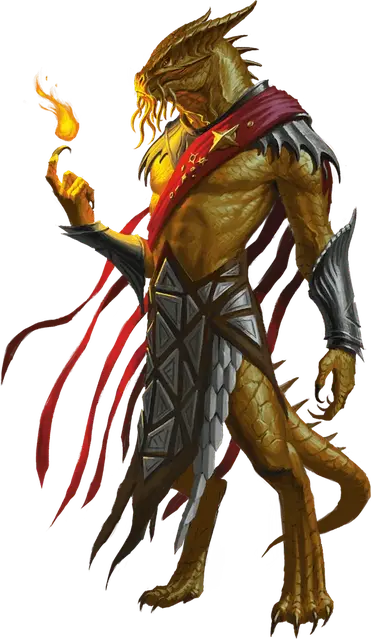

Драконид аурак
Aurak Draconian
Средний Монстр (Чародей), законно-злой

Класс Доспеха 17 (природный доспех)
Хиты 67 (9к8 + 27)
Скорость 35 футов
| мод | спас | ||
|---|---|---|---|
| СИЛ | 13 | +1 | +1 |
| ЛОВ | 14 | +2 | +2 |
| ТЕЛ | 16 | +3 | +3 |
| мод | спас | ||
|---|---|---|---|
| ИНТ | 16 | +3 | +6 |
| МДР | 11 | +0 | +3 |
| ХАР | 17 | +3 | +6 |
Навыки Восприятие +3
Иммунитет к состояниям очарование
Чувства истинное зрение 60 футов, пассивное Восприятие 13
Языки Общий, Драконий
Опасность 6 (2300 опыта)
Бонус мастерства +3
Особенности
Аура командира. Драконид излучает командирский напор в сфере радиусом 20 футов с центром на себе. Дракониды, находящиеся в области действия ауры, которые могут видеть и слышать аурака, не могут быть очарованы, и с преимуществом совершают спасброски, что избежать или окончить состояние «испуганный» на себе.
Предсмертная агония. Когда хиты драконида опускаются до 0, его магическая сущность в виде шаровой молнии набрасывается на ближайшее существо в пределах 30 футов от него, а затем по дуге поражает до двух других существ в радиусе 15 футов от первого. Каждое существо должно совершить спасбросок Ловкости Сл 14. При провале существо получает 9 (2к8) урона электричеством и становится ошеломлённым до конца своего следующего хода. При успехе существо получает половину этого урона и не становится ошеломлённым.
Действия
Мультиатака. Драконид совершает три атаки Раздиранием или Лучом энергии.
Разрывание. . Рукопашная атака оружием: +5 к попаданию, досягаемость 5 фт., одна цель. Попадание: 8 (1к12 + 2) рубящего урона.
Луч энергии. . Дальнобойная атака заклинанием: +6 к попаданию, дистанция 60 фт., одна цель. Попадание: 8 (1к10 + 3) урона силовым полем.
Вредоносное дыхание (перезарядка 5–6). Драконид выдыхает вредоносный газ 15-футовым конусом. Все существа в этой области должны совершить спасбросок Телосложения Сл 14. При провале существо получает 21 (6к6) урона ядом и получает 1 степень истощения. При успехе существо получает половину этого урона, не получает истощение и становится невосприимчивым к Вредоносному дыханию драконидов в течении 24 часов.
Использование заклинаний. Драконид накладывает одно из следующих заклинаний, не нуждаясь в материальных компонентах. Его базовой характеристикой является Харизма (Сл спасброска 14):
• Неограниченно: волшебная рука [mage hand], невидимость [invisibility];
• 2/день каждое: маскировка [disguise self], переносящая дверь [dimension door], послание [sending];
• 1/день: подчинение личности [dominate person].
Описание
Созданные из яиц золотых драконов, дракониды аураки самые могущественные среди своего рода. Вся их сущность переполнена мистической силой. В отличие от других драконидов аураки лишены крыльев. Это может внушить врагам ложное чувство безопасности до тех пор, пока они не выдохнут ядовитые испарения, похожие на те, что испускают их драконьи прародители. Аураки — тайные лидеры и стратеги, служащие командирами в Драконьих армиях. Они часто возглавляют отряды менее могущественных драконидов. После смерти присущая ауракам магия высвобождается в смертоносной вспышке электричества.
Дракониды
Дракониды — двуногие чудовища, рождённые из яиц металлических драконов, которые были испорчены сочетанием порочной алхимии и нечистой магии Королевы драконов. Драконьи армии тщательно оберегают секрет создания драконидов, заставляя металлических драконов Кринна думать, что их яйца находятся в заложниках. По этой причине те не препятствуют завоеваниям Королевы драконов.